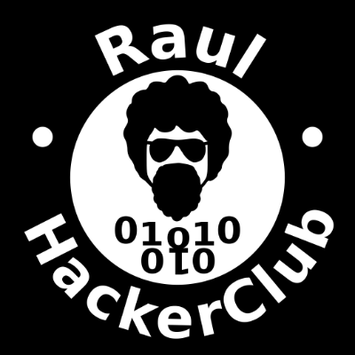

Raul Hacker Club
O que é um hacker?
- A pessoa que tem prazer em ter um entendimento profundo do funcionamento interno de equipamentos, sistemas, computadores e redes informáticas;
- Interessados em computação pessoal, hardware e eletrônica, adeptos da prática do DIY (faça você mesmo) e vão a fundo nestes assuntos;
- Alguém que aplica o seu engenho para conseguir um resultado inteligente, criativo, rápido e eficiente.
O que a gente faz no Raul Hacker Club?
Grupos de estudo, oficinas, eventos de tecnologia, hackerativismo...Alguns Projetos...
- Crianças Hackers
- Editatona das Minas
- Periféricas
- LampiãoSec
- Grupo de Estudo para Eletrônica e Arduíno
- Virada Hacker
- Archives World Map
- Laboratório de Dados para Cidadania Hacker
- ...
Lista de Projetos: http://raulhc.cc/Projetos
... e Eventos
- Encontro de Design Gráfico Livre
- Software Freedom Day
- Oficina de mapeamento OpenStreetMap
- Iemanjam
- CarnaHacker
- Dia de Dados Abertos
- Reunião Rotaract Club Bahia Norte
- Reunião Salvador pela Educação
- ...
Lista de Eventos: http://raulhc.cc/Agenda/Historico
Laboratório Hacker para Cidadania Hacker

Onde nos encontrar:
Grupo do Telegram
https://t.me/raspagemRaulHCNo Raul Hacker Club
Site
http://raulhc.cc/Grupo do Telegram
https://web.telegram.org/#/im?p=@raulhackerclubnaooficialLista do Telegram
https://web.telegram.org/#/im?p=@raulhackerclub